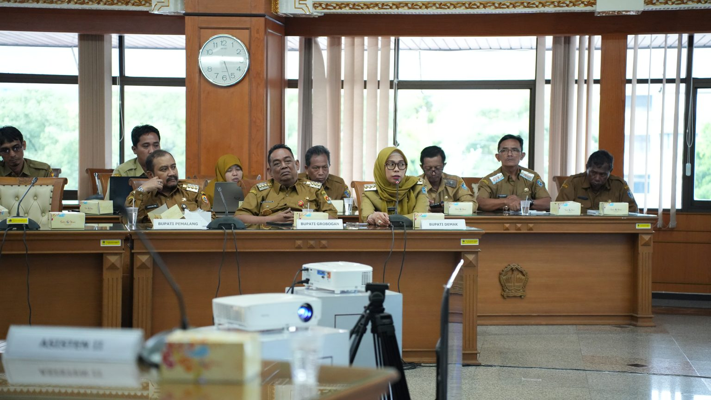
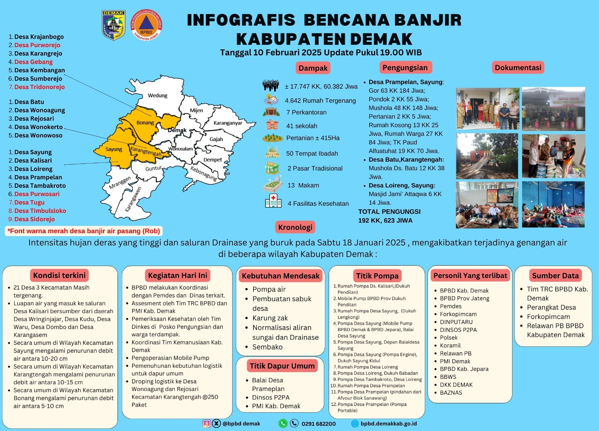

Berita Demak
Bupati Demak Tegaskan Proyek Tol Saja Tak Cukup Atasi Banjir
Senin 26-5-2025

DEMAK - Bupati Demak, dr. Hj. Esti’anah, S.E., menegaskan bahwa pembangunan Jalan Tol Semarang–Demak bukanlah solusi tunggal dalam mengatasi banjir rob yang kerap melanda wilayah pesisir Pantura, khususnya di Kabupaten Demak. Hal ini disampaikannya dalam Rapat Koordinasi Penanganan Banjir Wilayah Pantura Jawa Tengah yang digelar di Ruang Rapat Gedung Gubernur Jawa Tengah, Senin (26/5/2025). Rapat tersebut dipimpin langsung oleh Gubernur Jawa Tengah, dan dihadiri oleh Wakil Gubernur, anggota Komisi V DPR RI, Kepala BBWS Pemali Juana, perwakilan BBJN, Satker Tol Semarang – Demak, serta kepala daerah dari sejumlah kabupaten/kota terdampak, seperti Bupati Pemalang, Bupati Grobogan, Wakil Wali Kota Semarang, dan unsur terkait lainnya. Bupati Demak hadir bersama Sekretaris Daerah, Plt. Kepala Dinputaru, Camat Sayung, serta Kepala Desa Sayung. Dalam arahannya, Gubernur Luthfi menekankan pentingnya sinergi antara pemerintah pusat, provinsi, kabupaten/kota, dan masyarakat dalam menangani banjir dan rob di kawasan Pantura. Ia menegaskan bahwa penanganan tidak bisa dilakukan secara parsial, melainkan harus menyeluruh dari hulu ke hilir. “Kita tidak bisa kerja sendiri. Kita harus kerja sebagai sebuah tim karena ada hal-hal krusial yang harus segera ditindaklanjuti,” tegasnya. Sementara itu, anggota Komisi V DPR RI dari Fraksi Gerindra, Sriyanto Saputro, menyoroti dampak signifikan banjir rob di pesisir Jawa Tengah, terutama saat terjadi air pasang ekstrem beberapa waktu lalu. Ia mengingatkan bahwa penanganan rob tidak boleh ditunda karena berdampak langsung pada kehidupan dan perekonomian masyarakat. “Penanganan rob tidak boleh ditunda, karena menyangkut keberlangsungan ekonomi warga. Pemerintah pusat, melalui Presiden dan Kementerian PUPR, saat ini tengah menyiapkan Instruksi Presiden (Inpres) tentang Infrastruktur Daerah untuk mempercepat penanganan persoalan-persoalan strategis di daerah, termasuk banjir dan rob”, ungkapnya. Senada dengan itu, Kepala BBWS Pemali Juana, Fikri Abdurachman, menjelaskan bahwa Jalan Tol Semarang–Demak nantinya juga akan berfungsi sebagai tanggul laut dan diharapkan dapat mengurangi dampak rob di sebagian wilayah Sayung. Namun, menurut Bupati Esti’anah, permasalahan banjir di Sayung tidak bisa hanya bergantung pada proyek tol dan giant sea wall tersebut. Ia mengungkapkan bahwa Pemerintah Kabupaten Demak telah mengusulkan pembangunan tanggul laut tambahan di wilayah yang belum tercakup dalam proyek tol kepada Bappenas RI. “Pembangunan tanggul laut di luar kawasan tol penting untuk mengatasi rob di area yang belum terlindungi. Selain itu, ini juga bertujuan mengaktifkan kembali jalan kabupaten yang selama ini tergenang. Namun, hingga kini, usulan tersebut masih menunggu dukungan pendanaan dari pemerintah pusat”, jelasnya. Ia juga menyampaikan bahwa keterbatasan anggaran daerah menjadi kendala dalam merealisasikan pembangunan tersebut. Karena itu, dalam rapat ini, pihaknya turut mengusulkan normalisasi terhadap Sungai Dombo dan Sungai Manyaran, yang selama ini menjadi salah satu sumber banjir di Sayung. Usulan itu mendapat dukungan dari Wakil Gubernur Taj Yasin Maimoen. Ia menekankan bahwa normalisasi sungai dan penanganan terpadu harus segera dilakukan untuk mengatasi banjir dan rob di sejumlah wilayah. “Ada beberapa sungai yang menjadi prioritas penanganan, termasuk Sungai Dombo di Sayung dan Sungai Manyaran. Kita akan dorong agar ini segera ditindaklanjuti”, ujarnya. Rapat koordinasi ini menjadi momentum penting untuk memperkuat kolaborasi lintas sektor guna memastikan penanganan banjir di kawasan Pantura Jawa Tengah dilakukan secara terpadu, sistematis, dan berkelanjutan.
Lokasi: Demak, Indonesia | Senin 26-5-2025 | Tol Semarang-Demak | Berita Terkini
Lainnya
Update Infografis Banjir di Demak 60.382 Jiwa Terdampak dan 623 Jiwa Mengungsi
Selasa, 11 Februari 2025 13:18

DEMAK - Infografis Bencana Banjir Kabupaten Demak dari Badan Penanggulangan Bencana Daerah (BPBD) Demak per tanggal 10 Februari 2025 pukul 19.00 WIB. Mencatat sebanyak 21 desa di tiga (3) kecamatan masih tergenang air dengan total 60.382 jiwa terdampak, 4.642 rumah tergenang, 41 sekolah, 50 tempat ibadah, serta lahan pertanian seluas 415 ha. Bencana ini juga memaksa 623 jiwa dari 192 Kepala Keluarga (KK) mengungsi , di antaranya di GOR Desa Prampelan, mushola, rumah warga, hingga TK Paud Alfuatuhat. Plt. Kepala Pelaksana BPBD Kab. Demak Haris Wahyudi Ridwan, menyampaikan BPBD bersama instansi terkait terus melakukan berbagai langkah untuk menangani banjir ini. Adapun upaya untuk mempercepat surutnya air di lakukan mobilisasi pompa air di Desa Kalisari, Desa Sayung, Desa Loireng, dan Desa Prampelan. Selain itu, petugas juga melakukan evakuasi warga, pemeriksaan kesehatan di posko pengungsian, serta distribusi bantuan logistik kepada warga terdampak. "Secara umum di wilayah Kecamatan Sayung mengalami penurunan debit air antara 10-20 cm. Kemudian di Kecamatan Karangtengah mengalami penurunan debit 10-15 cm dan di Kecamatan Bonang penurunan debit 5-10 cm. Meski debit air di beberapa wilayah mulai mengalami penurunan, kondisi masih belum sepenuhnya pulih. Salah satu penyebab utama banjir adalah buruknya sistem drainase yang tersumbat, sehingga menghambat aliran air", kata Haris Wahyudi Ridwan, saat di Konfirmasi. Selasa, (11/02/2025). "Untuk pengungsian setelah adanya penurunan tersebut, ada kemungkinan akan persiapan pembersihan di beberapa rumah masing-masing yang memang mulai surut", tambahnya. Lebih lanjut Haris mengungkapkan, saat ini, pemerintah dan tim penanggulangan bencana masih membutuhkan beberapa bantuan mendesak, di antaranya pompa air tambahan, pembuatan sabuk desa, karung zak, serta normalisasi saluran drainase. Selain itu, warga terdampak juga membutuhkan bantuan logistik seperti sembako untuk memenuhi kebutuhan sehari-hari.
Lokasi: Demak, Indonesia | Selasa 11-2-2025 | Banjir Semarang-Demak | Berita Terkini